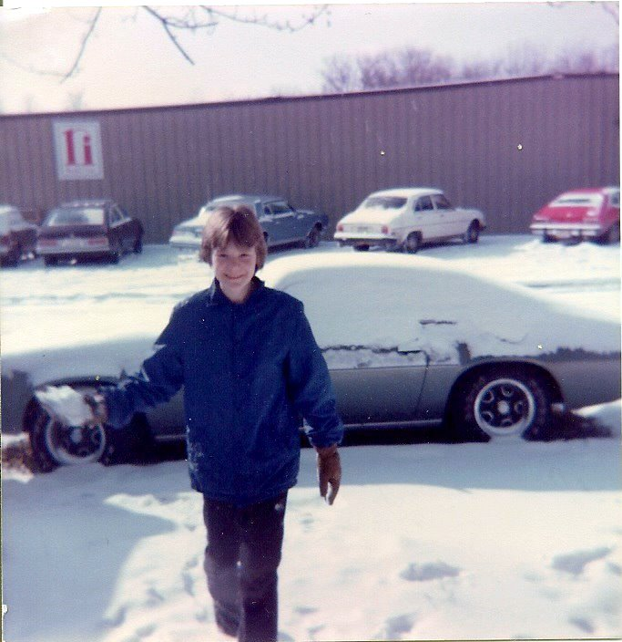

Bob Madison
Bob's first programming experience was with the wonderful IBM punch
cards in the PL/1 language. Later he learned COBOL, FORTRAN, C, Pascal,
C++, Visual Basic, Java, and JCL. At Purdue Bob taught the computer
programming courses the engineering students were required to take in
FORTRAN or C.
Bob loves reading, writing, and cooking. His favorite pasttime is
spending time with his five grandchildren.
Ross has had an interest in computers and technology for over 35 years. He first began programming in Basic on the his Commodore Vic 20 in 1985 at age 10. He was reintroduced to modern computers in 1993 with the birth of the world wide web. Over the years
he has worked with a variety of programming ideas and languages including HTML, XML, Perl, PHP, JavaScript, Python, and now learning C# and .Net Framwork throught the Eleven Fifty Academy.
Besides computers and technology... Ross also loves karaoke, ballroom dancing, and all forms of music. He sings and plays several musical instruments. He loves community work and is passionate about business, real estate, and investing.
Rod

Rod Westmoreland
At home you have unlimited time. This is truly an almighty mountain. We'll play with clouds today. Isn't that fantastic that you can create an almighty tree that fast? We want to use a lot pressure while using no pressure at all. Now it's beginning to
make a little sense.
It's almost like something out of a fairytale book. For the lack of a better word I call them hangy downs. Get tough with it, get strong. Maybe there's a happy little Evergreen that lives here.
Don't fiddle with it all day. You don't have to be crazy to do this but it does help. It's life. It's interesting. It's fun. Very easy to work these to death. The shadows are just like the highlights, but we're going in the opposite direction.
If you do too much it's going to lose its effectiveness. Everybody needs a friend. I thought today we would do a happy little picture. Trees live in your fan brush, but you have to scare them out. It's hard to see things when you're too close.
Take a step back and look. If you don't think every day is a good day - try missing a few. You'll see.
Besides computers and technology... Ross also loves karaoke, ballroom dancing, and all forms of music. He sings and plays several musical instruments. He loves community work and is passionate about business, real estate, and investing.


R Ross Denman II
Ross has had an interest in computers and technology for over 35 years. He first began programming in Basic on the his Commodore Vic 20 in 1985 at age 10. He was reintroduced to modern computers in 1993 with the birth of the world wide web. Over the years
he has worked with a variety of programming ideas and languages including HTML, XML, Perl, PHP, JavaScript, Python, and now learning C# and .Net Framwork throught the Eleven Fifty Academy.
Besides computers and technology... Ross also loves karaoke, ballroom dancing, and all forms of music. He sings and plays several musical instruments. He loves community work and is passionate about business, real estate, and investing.